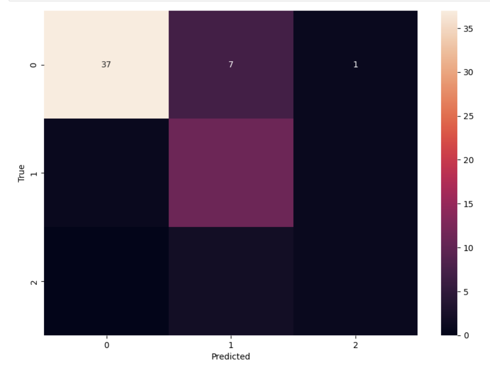

Decision Trees
Implementation of Decision Trees
Link to clustering code implementation
Methods
Basic Structure
- A decision tree is a flowchart-like structure in which:
- Internal nodes represent tests on attributes.
- Branches represent the outcome of these tests.
- Leaf nodes represent class labels or decision outcomes.
Functionality
- The goal is to classify data points by splitting the dataset based on attribute values.
- Splits are chosen to maximize the homogeneity of each resulting subset.
- It can be employed for both classification (predicting discrete labels) and regression (predicting continuous values).
Criteria for Splitting
- Commonly uses measures like "information gain" based on the concept of entropy from information theory.
- The attribute that results in the highest information gain (or other criteria) is chosen for the split.
Building Process
- Starts at the root and splits data on the best attribute.
- Recursively applies the process to each subset.
- Continues until all data in a node have the same class or further splitting is not beneficial.
- To avoid overfitting, trees are often "pruned" by removing sections that provide little predictive power.
Advantages
Limitations
- Can overfit noisy or complex data.
- Often used in ensemble methods like Random Forests to improve accuracy and robustness.
Code Workflow/Implementation()
- Library: Scikit-learn (`train_test_split` from `sklearn.model_selection`)
- Purpose: Splits the dataset into a training set (80% of the data) and a testing set (20% of the data). This is done to evaluate the model's performance on unseen data.
- Library: Scikit-learn (`DecisionTreeClassifier` from `sklearn.tree`)
- Purpose: Initializes a Decision Tree Classifier model and trains it on the training data (`X_train` and `y_train`).
- Library: Scikit-learn (`accuracy_score` from `sklearn.metrics`)
- Purpose: The model makes predictions on the test data (`X_test`). The accuracy of these predictions is then evaluated against the actual values (`y_test`) using the `accuracy_score` function.
- Libraries:
- Matplotlib (`plt` from `matplotlib.pyplot`) for plotting.
- Scikit-learn (`plot_tree` from `sklearn.tree`) for tree visualization.
- Purpose: Generates a visual representation of the trained decision tree. This is helpful for understanding how the model makes decisions.
Sample Code
X_train, X_test, y_train, y_test = train_test_split(X, y, test_size=0.2)
model = DecisionTreeClassifier()
model.fit(X_train, y_train)
predictions = model.predict(X_test)
accuracy = accuracy_score(y_test, predictions)
print(f"Model Accuracy: {accuracy}")
Results
- Model Accuracy: 0.8032786885245902
- Precision: 0.6190058479532163
- Recall: 0.6672364672364672
Confusion matrix of Decision tree
Implementation of Random Forest Algorithm
Methods
Ensemble Learning Technique
- Random Forest is an ensemble method that combines multiple decision trees to produce a more accurate and stable prediction for classification and regression tasks.
- Feature Selection Capability: Random Forests can indicate which features are important in the classification or regression task.
Construction of Multiple Decision Trees
- Each tree is built from a sample drawn with replacement (bootstrap sample) from the training set.
- In each tree, a subset of features is randomly selected to split the nodes, adding diversity and reducing correlation among trees.
Aggregation of Predictions
- In classification, the output is the mode of the classes predicted by individual trees.
- In regression, it's the mean of the predictions from all trees.
Advantages
- Handles large datasets with higher dimensionality effectively.
- Reduces overfitting by averaging multiple decision trees.
- Provides estimates of feature importance, helpful in large feature sets.
- Widely used due to its ease of use, robustness, and minimal need for parameter tuning.
Drawbacks
- Can be computationally intensive, especially with a large number of trees.
- Does not provide direct coefficients or relationships between features and the target variable.
Results
- Obtained Accuracy: 0.8524590163934426
Implementation of XGBoost Algorithm
Principle of Gradient Boosting
- XGBoost is based on gradient boosting, where predictive models are added sequentially to correct the predecessors' errors.
- Utilizes a gradient descent algorithm to minimize loss, typically a differentiable loss function.
- XGBoost's effectiveness is due to its amalgamation of gradient boosting with regularization, efficient data handling, system optimization, and its adaptability to different machine learning problems.
Tree-Based Learning and Regularization
- Employs decision trees as base learners.
- Focuses on minimizing a loss function that includes regularization to prevent overfitting.
- Regularization considers both tree complexity and leaf weights.
Efficient Handling of Sparse Data
- Capable of efficiently processing sparse data (data with many zeros or missing values).
- Uses sparsity-aware algorithms for missing data and weighted quantile sketch for optimal splits.
System Optimization
- Features parallelization in tree construction for faster computation.
- Includes cache-aware access to data structures and supports approximate tree learning (histogram-based).
Scalability and Flexibility
- Scalable across different computing environments, including single machines and distributed systems like Hadoop and Spark.
- Offers flexibility in objective functions and evaluation criteria, suitable for various machine learning tasks.
Results
- Obtained Accuracy: 0.8524590163934426
Conclusion
Detecting ADHD (Attention Deficit Hyperactivity Disorder) using fMRI (functional Magnetic Resonance Imaging)
scans is a promising area of research that leverages advanced neuroimaging techniques to better understand and
diagnose ADHD.
Definition
A decision tree is a powerful tool of supervised learning algorithms. It builds a flowchart-like tree structure where each internal node denotes a test on an attribute, each branch represents an outcome of the test, and each leaf node (terminal node) holds a class label. It is constructed by recursively splitting the training data into subsets based on the values of the attributes until a stopping criterion is met, such as the maximum depth of the tree or the minimum number of samples required to split a node.